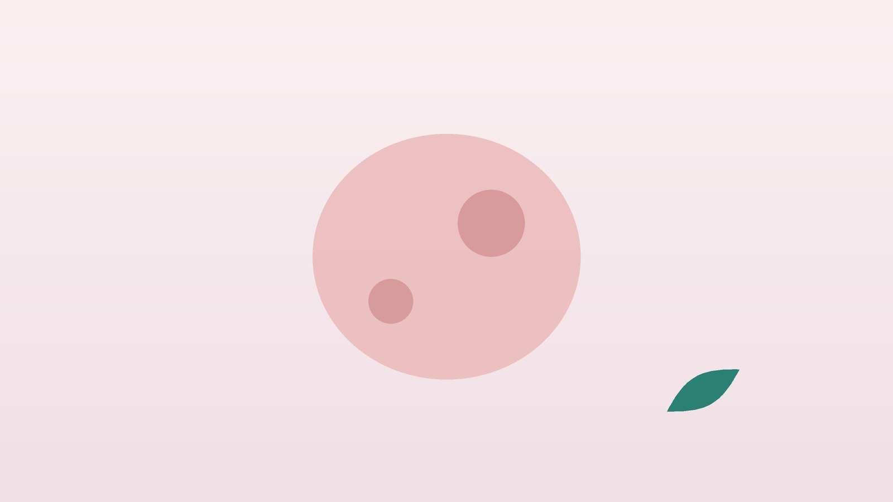

건강 칼럼 · 인천 자궁근종 한의원
생리량이 많고 아랫배가 묵직하다면, 자궁근종 확인과 한방 관리

자궁근종이 의심되는 변화가 있나요?
- 생리량이 예전보다 확실히 많아지고 덩어리가 섞인다
- 생리 기간이 7일 넘게 길어졌다
- 아랫배가 묵직하거나 손으로 만져지는 것이 있다
- 소변이 자주 마렵거나 변비가 심해졌다
- 조금만 걸어도 숨차고 어지러우며 얼굴이 창백해졌다
- 검진에서 근종이 있다는 말을 들은 적이 있다
이 체크리스트는 진단 도구가 아니라 상담이 필요한지 가늠해 보는 참고용입니다.
자궁근종은 왜 생기고, 무엇을 확인해야 하나요?
자궁근종은 자궁 근육 세포가 덩어리를 이루며 자라는 양성 종양으로, 여성호르몬인 에스트로겐과 프로게스테론의 영향을 받아 커지고 폐경 뒤에는 대개 줄어듭니다. 가족력, 이른 초경, 비만, 출산 경험이 없는 경우 더 흔하다고 알려져 있습니다. 자라는 자리에 따라 자궁 안쪽으로 튀어나온 점막하 근종, 근육층 안의 근층내 근종, 바깥쪽으로 자란 장막하 근종으로 나누며, 점막하 근종은 작아도 출혈이 많고 장막하 근종은 커져도 출혈보다 압박 증상이 두드러집니다.
미국산부인과학회(ACOG) 진료 지침은 증상이 없는 근종은 대부분 추적 관찰로 충분하고, 생리 과다나 압박 증상이 있으면 약물, 자궁 동맥 색전술, 근종 절제술, 자궁 절제술 등을 증상과 임신 계획에 맞춰 고르도록 안내합니다. 근종이 암으로 바뀌는 일은 매우 드물지만, 폐경 후에 새로 커지거나 빠르게 자라는 혹은 다른 질환일 수 있어 산부인과 정밀 검사가 필요합니다. 그래서 초음파로 크기와 위치를 처음에 정확히 기록하고 정해진 간격으로 비교하는 것이 가장 중요합니다.
산부인과나 응급실로 먼저 가야 하는 신호
- 대형 생리대가 한두 시간 만에 흠뻑 젖는 출혈이 몇 시간 이어진다
- 어지럽고 숨이 차며 쓰러질 것 같다, 심장이 빠르게 뛴다
- 아랫배에 갑자기 칼로 찌르는 듯한 심한 통증이 오고 열이 난다
- 소변이 전혀 나오지 않는다
- 폐경 후 다시 출혈이 있거나 혹이 빠르게 커진다
심한 출혈과 빈혈 증상은 수혈이나 지혈 치료가 필요할 수 있고, 갑작스러운 통증은 근종의 변성이나 줄기가 꼬이는 경우일 수 있어 지체하지 말아야 합니다. 이런 상황에서는 한방 치료를 기다리지 말고 바로 진료를 받으세요.
한의학은 자궁근종을 어떻게 보나요?
한의학에서는 배 속에 덩어리가 생기는 병을 징가(癥瘕)라 불렀습니다. 『황제내경 영추』 수창(水脹)편은 석가(石瘕)를 설명하며 찬 기운이 자궁 입구에 머물러 나가야 할 나쁜 혈이 빠지지 못하고 날로 커져 임신한 것처럼 배가 불러 오르고 생리가 제때 오지 않는다고 하였는데, 자궁근종의 모습과 닮은 기록입니다. 『금궤요략』에는 원래 징병(癥病)이 있는 부인에게 쓰는 계지복령환이 실려 있습니다.
원인으로는 흐름이 막혀 뭉친 혈인 어혈(瘀血), 스트레스로 기운이 정체되는 기체(氣滯), 아랫배가 차가워져 순환이 느려지는 한응(寒凝), 끈적한 노폐물이 쌓이는 담습(痰濕)을 꼽았습니다. 출혈이 많아 지친 몸에는 뭉친 것을 푸는 것보다 기혈을 먼저 채우는 쪽에 무게를 두는 등, 그때그때 몸 상태에 맞춰 순서를 정합니다.
나는 어떤 유형일까?
1. 기체혈어(氣滯血瘀) 뭉치고 막힌 유형
- 이런 분에게 많아요
- 스트레스가 많고 생리통이 있는 분
- 나타나는 모습
- 생리혈이 검붉고 덩어리가 많으며 아랫배가 찌르듯 아프다
- 함께 오는 몸의 신호
- 가슴 답답함, 생리 전 예민함, 옆구리 결림
- 진찰에서 보이는 모습
- 혀가 어둡거나 반점이 있고 맥이 껄끄러움
- 치료 방향
- 기운을 돌리고 뭉친 혈을 풀어 주는 방향 (계지복령환 계열)
- 오늘부터 해 볼 것
- 하루 30분 걷기로 골반 순환을 도와 보세요.
2. 한응혈어(寒凝血瘀) 차서 뭉친 유형
- 이런 분에게 많아요
- 손발과 아랫배가 찬 분
- 나타나는 모습
- 아랫배가 시리고 따뜻하게 하면 통증이 덜하다
- 함께 오는 몸의 신호
- 생리 지연, 추위를 탐, 허리 시림
- 진찰에서 보이는 모습
- 혀가 담백하고 설태가 희며 맥이 깊고 느림
- 치료 방향
- 아랫배를 데워 순환을 돕는 방향 (온경탕 계열)
- 오늘부터 해 볼 것
- 찬 음료를 줄이고 배와 허리를 따뜻하게 하세요.
3. 담습(痰濕) 무겁고 끈적한 유형
- 이런 분에게 많아요
- 체중이 늘고 몸이 무거운 분
- 나타나는 모습
- 아랫배가 묵직하고 냉이 많으며 몸이 붓는다
- 함께 오는 몸의 신호
- 식후 졸림, 무른 변, 가래
- 진찰에서 보이는 모습
- 혀가 붓고 설태가 두꺼움
- 치료 방향
- 고인 습을 걷어 내고 흐름을 돕는 방향 (창부도담탕 계열)
- 오늘부터 해 볼 것
- 단 음식과 밀가루를 줄이고 체중을 관리하세요.
4. 기혈양허(氣血兩虛) 출혈로 지친 유형
- 이런 분에게 많아요
- 생리량이 많아 빈혈이 있는 분
- 나타나는 모습
- 조금만 움직여도 숨차고 어지러우며 얼굴이 창백하다
- 함께 오는 몸의 신호
- 두근거림, 손톱이 잘 깨짐, 피로
- 진찰에서 보이는 모습
- 혀가 핏기 없이 희고 맥이 가늚
- 치료 방향
- 기혈을 먼저 채우고 출혈을 다스리는 방향 (귀비탕 계열)
- 오늘부터 해 볼 것
- 철분이 많은 살코기와 푸른 잎채소를 챙기세요.
한의원에서는 어떻게 진찰하나요?
- 초음파 결과 확인: 근종의 개수, 크기, 위치(점막하·근층내·장막하)와 최근 변화를 확인합니다.
- 혈액 검사 확인: 혈색소와 철분 수치로 빈혈의 정도를 봅니다.
- 생리 문진: 생리량, 기간, 덩어리, 통증, 압박 증상과 임신 계획을 여쭙니다.
- 복진·설진·맥진: 아랫배의 온도와 압통, 혀와 맥으로 유형을 판단합니다.
침·약침·한약 치료는 어떻게 하나요?
1. 침 치료
- 관원(關元): 배꼽 아래 세 치, 손가락 네 개를 붙인 너비만큼 내려간 곳. 아랫배와 자궁의 기운을 돕습니다.
- 자궁(子宮): 관원보다 조금 아래에서 양옆으로 손가락 네 마디 떨어진 곳. 골반 순환을 돕습니다.
- 혈해(血海): 무릎뼈 안쪽 위 모서리에서 손가락 세 마디 위. 혈의 흐름을 조절합니다.
- 지기(地機): 무릎 아래 안쪽 뼈 모서리(음릉천)에서 손가락 네 마디 아래. 생리통에 씁니다.
- 태충(太衝): 발등 위, 첫째와 둘째 발허리뼈가 만나는 앞쪽 오목한 곳. 정체된 기운을 풉니다.
침 치료로 근종의 크기가 줄어든다는 근거는 충분하지 않습니다. 생리통과 아랫배의 묵직함, 긴장을 덜어 생활을 편하게 하는 데 목적을 둡니다.
2. 약침과 온열 요법
허리와 엉치, 아랫배 주변의 관련 경혈에 약침을 적용해 골반 주변의 뻐근함을 풀어 줍니다. 아랫배가 차가운 유형은 온열 요법을 함께 시행합니다. 출혈이 많은 시기에는 자극을 줄이고 일정을 조정합니다.
3. 한약
유형별 탕약을 기본으로 하되, 생리 중 출혈이 많은 분에게는 혈을 푸는 약재를 생리 기간에 쉬고 기혈을 채우는 처방을 앞세우는 식으로 시기를 나눕니다. 철분제나 호르몬 약, 지혈제를 드시는 분은 알려 주시면 확인해 처방합니다. 임신을 준비 중이거나 수술을 앞두고 있다면 진료 때 꼭 알려 주세요. 확인 후 안전한 약재로 처방합니다.
원장님이 네이버 블로그에 진료 이야기와 건강 정보를 꾸준히 올리고 있습니다. 더 많은 이야기는 블로그에서 확인해 보세요.
블로그 보기관리는 어떤 순서로 진행되나요?
- 초음파 기준 확인 산부인과 초음파로 크기와 위치를 기록해 둡니다.
- 첫 한방 진료 유형과 빈혈 여부를 확인하고 가장 불편한 증상을 목표로 정합니다.
- 1~3주기 생리 주기에 맞춰 침 치료와 약침, 탕약으로 생리통과 묵직함, 피로를 다룹니다.
- 정기 추적 산부인과에서 정해 준 간격으로 초음파를 다시 보고, 증상 변화와 함께 관리 방향을 점검합니다.
근종의 크기 변화는 반드시 초음파로 확인하며, 한방 관리는 생리 증상과 컨디션의 변화를 기준으로 경과를 봅니다.
근종이 있을 때 생활 관리
- 생리량 기록: 생리대 개수와 교체 간격을 적어 두면 과다출혈을 빨리 알아챌 수 있습니다.
- 철분 챙기기: 생리량이 많다면 빈혈 검사를 받고 살코기, 달걀, 시금치 등을 꾸준히 드세요.
- 체중 관리: 체중이 늘면 근종이 생기기 쉬운 환경이 되므로 적정 체중을 지킵니다.
- 아랫배 보온: 찬 음료와 노출을 줄이고 배와 허리를 따뜻하게 합니다.
- 영양제 확인: 에스트로겐 성분이 든 건강기능식품은 드시기 전에 성분을 확인하세요.
다른 진료가 함께 필요한 경우
- 생리 과다로 빈혈이 심하면 산부인과 치료와 철분 보충이 먼저입니다.
- 근종 때문에 임신이 어렵거나 유산이 반복된다면 난임 전문 진료를 받으세요.
- 크기가 빠르게 커지거나 폐경 후 출혈이 있다면 정밀 검사를 받으세요.
- 약물이나 수술 치료가 필요하다는 의견을 들었다면 산부인과 계획을 우선으로 하세요.
자주 묻는 질문 Q&A
- Q1. 자궁근종이 있으면 꼭 수술해야 하나요?
- 증상이 없고 크기가 안정적이면 대부분 정기 초음파로 지켜봅니다. 출혈이나 압박 증상이 크면 산부인과에서 치료를 상담합니다.
- Q2. 한약을 먹으면 근종이 작아지나요?
- 근종을 줄인다고 약속할 수는 없습니다. 크기는 초음파로 확인하고, 한방 치료는 생리통과 묵직함, 피로 같은 증상 관리에 둡니다.
- Q3. 근종이 암이 되나요?
- 양성 종양이 암으로 바뀌는 경우는 매우 드뭅니다. 다만 빨리 자라거나 폐경 후 커지면 정밀 검사가 필요합니다.
- Q4. 초음파는 얼마나 자주 봐야 하나요?
- 크기와 증상에 따라 산부인과에서 정해 주는 간격을 따르세요.
- Q5. 근종이 있어도 임신할 수 있나요?
- 많은 분이 임신하고 출산합니다. 자궁 안쪽으로 튀어나온 근종은 임신에 영향을 줄 수 있어 난임 전문의와 상의가 필요합니다.
- Q6. 홍삼이나 석류를 먹어도 되나요?
- 성분에 따라 다르니 드시는 건강식품을 가져와 보여 주시면 함께 확인합니다.
- Q7. 생리량이 많은데 언제 병원에 가야 하나요?
- 한두 시간마다 생리대를 갈아야 하거나 어지럽고 숨이 차면 바로 진료를 받으세요.
- Q8. 폐경이 되면 근종이 없어지나요?
- 대개 폐경 후 호르몬이 줄면서 작아지지만, 폐경 후 커진다면 꼭 검사를 받아야 합니다.
진료 안내
- 진료시간
- 평일 09:00~20:00 (점심시간 13:00~14:00)
토·일·공휴일 09:00~15:00 - 주소
- 인천광역시 서구 가경주로 46, 2층 (가정동)
인천2호선 가정중앙시장역 인근
영상으로 길 안내 보기 → - 주차
- 한의원 건물 바로 앞 1층 도원주차장
진료시간은 사정에 따라 바뀔 수 있으니 방문 전 전화로 확인해 주세요.
함께 읽으면 좋은 칼럼
건강 칼럼 전체 보기 →
참고 자료
- American College of Obstetricians and Gynecologists. Management of Symptomatic Uterine Leiomyomas: ACOG Practice Bulletin No. 228. Obstetrics & Gynecology, 2021
- 『황제내경 영추(靈樞)』 수창편(水脹篇), 석가(石瘕)
- 장중경, 『금궤요략(金匱要略)』 부인임신병맥증병치(婦人妊娠病脈證幷治), 계지복령환
- 질병관리청 국가건강정보포털 — 원문
※ 이 글은 일반적인 건강 정보이며, 개인의 상태에 따라 치료 방법과 결과는 다를 수 있습니다. 정확한 진단과 치료는 진료를 통해 결정됩니다. 침·약침 시술 후 드물게 멍, 통증 등이 생길 수 있습니다.